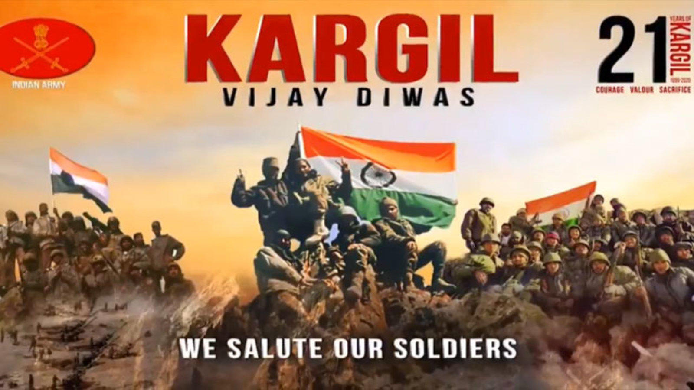

“Education is our passport to the future, for tomorrow belongs to the people who prepare for it today.” “Education is the kindling of a flame, not the filling of a vessel.”
 ( Shri Honey Mehta) Principal
( Shri Honey Mehta) Principal
GIFT YOUR OLD TEXT-BOOK TO OTHER STUDENTS AND SAVE TREES
 Neerja , Librarian
Neerja , Librarian
KARGIL VIJAY DIWAS
 कारगिल विजय दिवस स्वतंत्र भारत के लिये एक महत्वपूर्ण दिवस है। इसे हर साल 26 जुलाई को मनाया जाता है। कारगिल युद्ध लगभग 60 दिनों तक चला और 26 जुलाई को उसका अंत हुआ। इसमें भारत की विजय हुई। इस दिन कारगिल युद्ध में शहीद हुए जवानों के सम्मान हेतु मनाया जाता है। 26 जुलाई 2020 को हम भारतवासी कारगिल विजय दिवस की 21 वी वर्षगाँठ मना रहे हैं | कारगिल में शहीद हुए भारत माँ के वीर सपूतों और सैनिकों को शत शत नमन | जय हिन्द, जय भारत | Kargil Vijay Diwas is a holiday observed in India on the 26th of July. On this date in 1999 India successfully took command of the high outposts. The Kargil war was fought for more than 60 days and ended on 26 July 1999, when the Pakistani army took advantage of the melting snow and - betraying the bilateral understanding of both the nations that the post would remain unattended during the winter season - took command of the high outposts of India. The Pakistani army denied involvement in the war, claiming that it was caused by independent Kashmiri rebel forces, however documents left behind by casualties and later statements by Pakistan's Prime Minister and Chief of Army Staff showed involvement of Pakistani paramilitary forces, led by General Ashraf Rashid. The Kargil war resulted in loss of life on both the sides and was ended when India regained control over the post and ejected the Pakistani Army out of the territory. Kargil Vijay Diwas is celebrated on 26 July every year in honour of the Kargil War's Heroes. This day is celebrated in the Kargil–sector and the national capital New Delhi, where the Prime Minister of India pays homage to the soldiers at Amar Jawan Jyoti at India Gate every year. Functions are also organized all over the country to commemorate the contributions of the armed forcesA tribute to Dr.A.P.J.Abdul Kalam on his 5th death anniversary.
 Avul Pakir Jainulabdeen Abdul Kalam ; 15 October 1931 – 27 July 2015) was an Indian aerospace scientist and politician who served as the 11th President of India from 2002 to 2007. He was born and raised in Rameswaram, Tamil Nadu and studied physics and aerospace engineering. He spent the next four decades as a scientist and science administrator, mainly at the Defence Research and Development Organisation (DRDO) and Indian Space Research Organisation (ISRO) and was intimately involved in India's civilian space programme and military missile development efforts. He thus came to be known as the Missile Man of India for his work on the development of ballistic missile and launch vehicle technology.[2][3][4] He also played a pivotal organisational, technical, and political role in India's Pokhran-II nuclear tests in 1998, the first since the original nuclear test by India in 1974.
Kalam was elected as the 11th President of India in 2002 with the support of both the ruling Bharatiya Janata Party and the then-opposition Indian National Congress. Widely referred to as the "People's President",he returned to his civilian life of education, writing and public service after a single term. He was a recipient of several prestigious awards, including the Bharat Ratna, India's highest civilian honour.
While delivering a lecture at the Indian Institute of Management Shillong, Kalam collapsed and died from an apparent cardiac arrest on 27 July 2015, aged 83. Thousands, including national-level dignitaries, attended the funeral ceremony held in his hometown of Rameswaram, where he was buried with full state honours
Avul Pakir Jainulabdeen Abdul Kalam ; 15 October 1931 – 27 July 2015) was an Indian aerospace scientist and politician who served as the 11th President of India from 2002 to 2007. He was born and raised in Rameswaram, Tamil Nadu and studied physics and aerospace engineering. He spent the next four decades as a scientist and science administrator, mainly at the Defence Research and Development Organisation (DRDO) and Indian Space Research Organisation (ISRO) and was intimately involved in India's civilian space programme and military missile development efforts. He thus came to be known as the Missile Man of India for his work on the development of ballistic missile and launch vehicle technology.[2][3][4] He also played a pivotal organisational, technical, and political role in India's Pokhran-II nuclear tests in 1998, the first since the original nuclear test by India in 1974.
Kalam was elected as the 11th President of India in 2002 with the support of both the ruling Bharatiya Janata Party and the then-opposition Indian National Congress. Widely referred to as the "People's President",he returned to his civilian life of education, writing and public service after a single term. He was a recipient of several prestigious awards, including the Bharat Ratna, India's highest civilian honour.
While delivering a lecture at the Indian Institute of Management Shillong, Kalam collapsed and died from an apparent cardiac arrest on 27 July 2015, aged 83. Thousands, including national-level dignitaries, attended the funeral ceremony held in his hometown of Rameswaram, where he was buried with full state honours
Wings OF Fire
Wings of Fire: An Autobiography of A P J Abdul Kalam (2005), former President of India. It was written by Dr. A P J Abdul Kalam and ARUN Tiwari. REESHIKESH examines his early life, effort, hardship, fortitude, luck and chance that eventually led him to lead Indian space research, nuclear and missile programs. Kalam started his career, after graduating from Aerospace engineering at MIT (Chennai), India, at Hindustan Aeronautics Limited and was assigned to build a hovercraft prototype. Later he moved to ISRO and helped establish the Vikram Sarabhai Space Centre and pioneered the first space launch-vehicle program. During the 1990s and early 2000, Kalam moved to the DRDO to lead the Indian nuclear weapons program, with particular successes in thermonuclear weapons development culminating in the operation Smiling Buddha and an ICBM Agni (missile). Kalam died on 27 July 2015, during a speech at Indian Institute of Management in Shillong, Meghalaya.List of all 25 books written by Dr. A. P. J. Abdul Kalam
Dr. A. P. J. Abdul Kalam played an important role in the second Pokhran nuclear test in 1998. He was also associated with India's space program and missile development program. Therefore, he is also called "Missile Man". In 2002, Kalam was elected 11th President of India. After 5 years of service, he returned to teaching, writing and public service. He was honoured with several prestigious awards including India's highest civilian honour "Bharat Ratna" in 1997. In this article, we are publishing a list of 25 books which are written by Abdul Kalam and hope that these books will prove to be inspirational in your life.
| Sr. No. | Book Name | Publishing year |
|---|---|---|
| 1 | India 2020: A Vision for the New Millennium | 1998 |
| 2 | Wings of Fire: An Autobiography | 1999 |
| 3 | Ignited Minds: Unleashing the Power within India | 2002 |
| 4 | The Luminous Sparks: A Biography in Verse and Colours | 2004 |
| 5 | Guiding Souls: Dialogues on the Purpose of Life | 2004 |
| 6 | Mission of India: A Vision of Indian Youth | 2005 |
| 7 | Inspiring Thoughts: Quotation Series | 2005 |
| 8 | You Are Born to Blossom: Take My Journey Beyond | 2011 |
| 9 | The Scientific India: A Twenty First Century Guide to the World around Us | 2011 |
| 10 | Failure to Success: Legendry Lives | 2011 |
| 11 | Target 3 Billion | 2011 |
| 12 | You are Unique: Scale New Heights by Thoughts and Actions Publishing year | 2012 |
| 13 | Turning Points: A Journey through Challenges | 2012 |
| 14 | Indomitable Spirit | 2013 |
| 15 | Spirit of India | 2013 |
| 16 | Thoughts for Change: We Can Do It | 2013 |
| 17 | My Journey: Transforming Dreams into Actions | 2013 |
| 18 | Governance for Growth in India | 2014 |
| 19 | Manifesto for Change | 2014 |
| 20 | Forge Your Future: Candid, Forthright, Inspiring | 2014 |
| 21 | Beyond 2020: A Vision for Tomorrow’s India | 2014 |
| 22 | The Guiding Light: A Selection of Quotations from My Favourite Books | 2015 |
| 23 | Reignited: Scientific Pathways to a Brighter Future Publishing year | 2015 |
| 24 | The Family and the Nation | 2015 |
| 25 | Transcendence My Spiritual Experiences | 2015 |